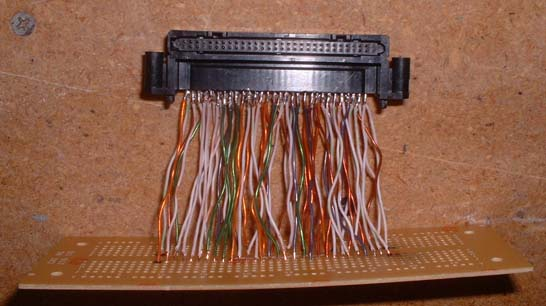
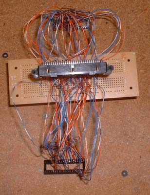

Cartridge Dumper
Cart dumper made out of an EPROM programmer and a BUNCH of wires
This is what you will need to make a cart dumper - two 32pin (or more - I have 40 pins because they're easier to find) sockets, a VB Cart Socket (from an actual Virtual Boy system :-( , or a lot of pins w/ some sort of epoxy holding it's shape), and a board to mount it to (not completely necessary, but definately a help) - my board has connection strips across it so there's really 47 sets of 5 holes all connected on each half, those strips make it easier to connect multiple wires to the same pin. Then you need some Cat3 or Cat5 wire (Cat3 is better because it isn't twisted pair, which makes it easier to pull each wire out individually, and it doesn't tangle later when you're trying to solder). All this stuff (minus the VB Connector is available at Radio Shack) Then you also need a EPROM reader - For everything here, I am using an EPROMER5.
Before
After - if you get 40 pin IC sockets, you should remove the extra 8 pins so it fits in the EPROM reader easier - you can just push them through from the bottom out the top.
Then you should solder in the 32 wires to each of the 2 sockets, I used a color order to make it easier to find the wire I'm looking for in the mess

Then you must remove the connector from the VB - it could probably be done with a soldering iron and some wick, but I decided that a faster way would be to take a torch and melt the solder at all the pins at once, then just pull the whole thing off. Then solder all the wires onto the connector (can be very tough and frustrating), it works best to tin the wire first, then solder to the pins, and DON'T use too much solder, it can short multiple pins easily because they are so close together. As you can see, I used Cat5 on this part, and look how tangled those wires are!

This is the connector after shortening and soldering all the wires to it - I just went in numerical order so it is easier to find the pins you want, and I connected all wires so I wouldn't have to later to access other things such as the save game memory and anything else that could come up.
The bottom of the connector - as you can see, those rows all conected together to make it easier to solder more wires to each pin
Then you want to look at this file to see which wires to connect to which pins

And here's the top of the finished dumper
And the bottom...
And here it is connected to the EPROM Reader/Writer

To dump a game, you have to dump half of the cart at a time, then use a program to combine the even and odd bytes. You need to select the chip that corresponds with the rom size of the game you are dumping. A list of ROM sizes can be found here. You have to remember that you are only dumping half at a time, so a game that is 512k, you only dump 256k at a time. But if you look at that list, the number shown is already half the physical disk size, so if it says 256k, you want to select a 27C020, 512k, select 27C040, and 1024k, select 27C080. Then connect the first side into the reader, and press read. Then after it reads, save the file and read the other half and do the same. Then you have to use a program to merge the two files together.
You can also use this to program your chips if you plug your reprogrammable EPROM cart into it, which may not seem too useful because you have to take the chips out to erase (or make something that erases them in the cart), but in the future it could be useful using an electronically eraseable media such as a Flash chip that could be permanently mounted inside the cart to look like a standard game.
{kind=link}